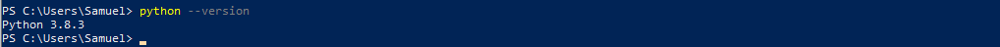
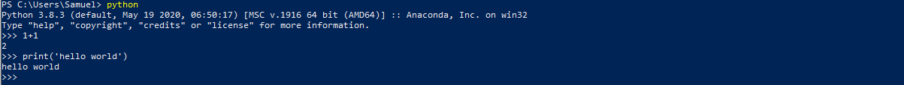
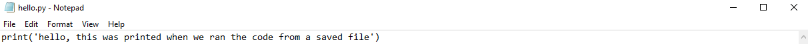
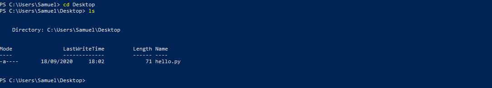
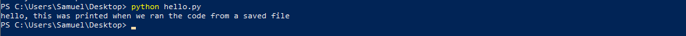
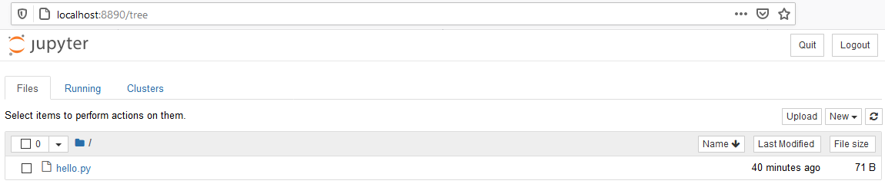
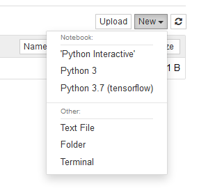
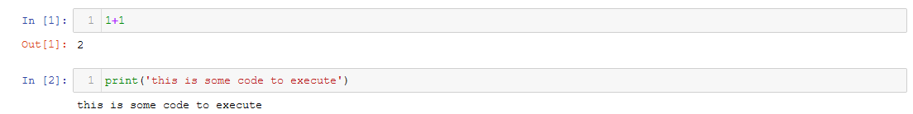
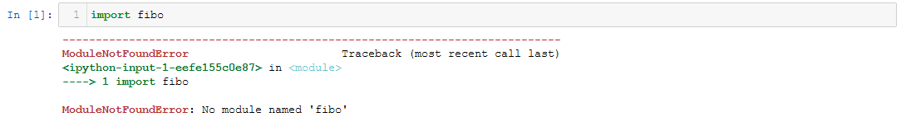
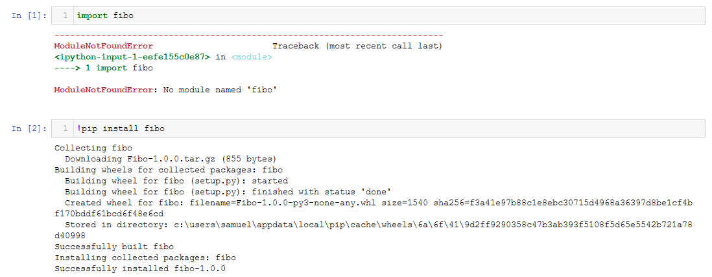

Jupyter Notebooks¶
The Jupyter Notebook is an open-source web application that allows you to create and share documents that contain live code, equations, visualizations and narrative text. Uses include: data cleaning and transformation, numerical simulation, statistical modeling, data visualization, machine learning, and much more. That is what makes it so useful, a notebook becomes an experimental environment where users can share a ‘document’ that consists of well explained blocks of code that users can modify and interact with. Each page in this booklet is a Jupyter Notebook that has been compiled to form a booklet.
If you are familiar with MATLAB LiveScripts then that is good news as Jupyter Notebooks are essentially the same thing (I think LiveSripts were built because of the success of Jupyter Notebooks but I could be wrong). Essentially each notebook is formulated by a combination of cells, and each cell can either be a markdown cell or a code cell. A markdown cell displays text which can be formatted using markdown language - in a markdown cell we can write equations, standard text, use headings and insert images to convey intent - the text you are reading now was written in a markdown cell! A code cell is an environment where code can be written directly, the contents of this cell can be executed in the programming language of the current kernel (which for all intensive purposes will be Python).
~
Installation (Windows)¶
I’ll start this by saying that my first experience installing Jupyter Notebooks was a little tricky - there are a lot of steps in the installation that (maybe you have) I hadn’t had experience with so was a steep learning curve but I’ve learnt such a great deal because of it.
Installing Python¶
First things first though, lets install Python. This step is straight forward and you can download it directly here (https://www.python.org/downloads/). Follow your way through the install wizard and before you know it Python will be installed on your machine. But at that point nothing really happens. It’s not as if an application appears on your desktop that says Python and we can open it and start coding in Python, it works a little differently. Python will install to this location C:\Users\Sam\AppData\Local\Programs\Python\ by default (on Windows), where the AppData folder is a hidden folder which again might make it even less intuitive. But once Python is installed, we can open the Command Prompt (or Powershell) and type python --version into the command line, we will see the current version of Python that you have installed printed into the command window.

If you do not see this it is likely that Python has been installed incorrectly and you might wish to try again (you may have to add the Python installation location to your system PATH variables but will be worth googling if you have this issue).
Using Python¶
In the Command Prompt/Terminal window we can type Python to intialise Python and allow us to start coding. Here we can type code directly into the terminal window such as print('Hello World') and you’ll see the output appear in the window. What is actually happening here is that through the command prompt, we have initiated a Python ‘kernel’ (which is a program that runs and introspects the user’s code) and within that kernel we can execute the code. Think of it as its own environment that we have created for the purpose of coding.

In this window we have access to all the Python functionality and we can define variables, set functions and execute scripts. Python code is typically saved within files with the extension .py. We can create .py files in any text editor, including Notepad. Here we use notepad to write a simple line of code and save the file as hello.py on the Desktop.

We can use the terminal window to make python execute this file, upon execution (if it worked successfully) we would expect the sentence hello, this was printed from when we executed the code from a saved file to be printed. In order to do this though we must first ‘change directory’ such that we are in the same location as the .py file. By default, you can see that when I open Powershell I start at the “C:\Users\Samuel” location. From here, I can change directory into my Desktop folder by typing cd Desktop. Once you do this, you will see that the path (on the left hand side) will have updated to make you aware of your current position. If ever you are unsure as to what directories you can change into, type ls and they will be printed below. ls simply lists all files in the directory that you are currently in.

Here you can see that I am now in my Desktop folder and when I listed my directories I can see the file hello.py. This means that I can now execute the file by typing python hello.py.

It worked! But as you can imagine this is not the most pleasant environment to code. Surely there is a better way to do it. The answer is yes, instead of using Notebook there are many more sophisticated text editors that you can use which are known as an Integrated Development Environment (IDE) that have additional functionality to suit your needs, some of the more popular ones include Visual Studio Code (VS Code) and Atom. But as mentioned earlier, we are going to focus on Jupyter Notebooks instead.
Using Pip to install Jupyter notebooks and modules¶
In order to install Jupyter notebooks the simplest way to do this is through a package manager - these package managers will become a common theme of working with Python as they make it very easy to install, update and manage different modules that we will end up using later. It is important to know that there are different types of package managers available, but the one I will talk about here is pip (simply because it’s the one that I use - other options include conda which may or may not be more straight forward but I’ll just share my experience and what I tend to use). To install pip use this link (https://pip.pypa.io/en/stable/installing/) and follow the guidance, it will ask you to download a file called get-pip.py. You should save this in a place that you can access, and then use Python to run it in the same way I described earlier. Upon doing this Python will then install pip on your computer and you will have access to all of the pip functionality. Once this is done, you can type pip install 'XXXXXXX' in the terminal to install, well, anything really. We will use this method to install modules in the future, but we will start by typing pip install notebook to install Jupyter notebooks to your system. Go to this link (https://jupyter.org/install) if this causes any issues and it will offer a more thorough troubleshooting process, note that here we are using the ‘classic Jupyter Notebook’ but the option to use JupyterLab is also there - just I don’t elect to use it myself. Once this is done, we can activate Jupyter notebooks by typing jupyter notebook in your terminal. If successful, this will open up a browser window where the Jupyter notebook is being hosted locally. You will be greeted by a window that looks similar to that shown below:

Note
The files that you will see here will depend on which directory you were in when you typed the command ‘jupyter notebook’. I changed directory (cd) to my Desktop folder which only contained the hello.py file I mentioned earlier.
This page is essentially the Jupyter hub and gives you access to all the functionality you need. You can upload files directly. If you change files in your File Explorer (or Finder) and refresh the page, any changes you make will automatically be populated here. It is nothing more than a ‘online’ (hosted) version of your local repository. Here you can click new to create a new file. You have the options of creating new folders, notebooks(!) and even terminal windows.

When you open your first notebook, you will be greeted by an empty code cell. At the top of the page, you can name the notebook by double clicking where it says ‘Untitled’. Inside this code cell, you can type any code you like and it will execute by using the shortcut shift-Enter.

You’ll see that on the left hand side it says In [1], Out [1] and In [2], Out [2]. This indicates that a code cell has been activated and the number refers to the order in which the cells were activated. In these cells you can import the necessary libraries you may wish to use in your algorithm. It is important to note that you will not be able to import libaries that are not on your system, if you try to do so you will be greeted by an error that looks similar to this:

Here I try to import the fibo module to demonstrate the problem. The module here is not important, but fibo is a simple module that provides access to some fibonacci-related functions. You can see that we are greeted with a ModuleNotFoundError:. This simply means that when the notebook tried to locate the fibo module on your machine, it was unsuccessful. We therefore need to install the module so that we can import it successfully, and we do so using pip (package manager that we installed earlier!).

Typically when installing things using the pip package manager, we do so in the Command Prompt/Terminal. We can write pip install fibo in your terminal window and pip will begin the installation. Jupyter Notebooks also give you the functionality to do this within a code cell directly. We can use the exclamation mark, !, as a preface to write code as if we were in the terminal window. So by typing !pip install fibo, the installation process begins and information regarding the installation will be printed. At this point, the fibo installation was succesful so once again we can import fibo and start making the algorithms!
Final Words¶
Importing modules will be a common theme when working with Python but you’ll get used to it and start to appreciate that it actually is quite a nice way to do things. When working through the examples in this booklet, if at any point you don’t have a particular module installed simple install it in the way I just described and you’ll be okay. If ever there is an issue with installation, Python will give you an error message that is usually very helpful and provides guidance as to how to fix it. Otherwise there are a lot of community support websites such as www.stackoverflow.com that offer additional guidance, I can guarantee if you run into a problem you won’t be the first that it has happened to so there’s a lot of help available. In the future though, you may start hearing about things known as virtual environments. This sounds funky but its not that bad. When you create a new ‘virtual environment’, you are essentially creating a clean state where no modules are installed. You can then install modules into that environment specifically. This is particularly useful to avoid compatibility issues. Sometimes on github for example, a user may have shared some code that was written in outdated versions of modules that are no longer compatibile with ones that you have - you can therefore make a new virtual environment and import all of the versions of the modules that they used without affecting any of your other work!